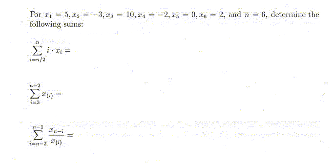
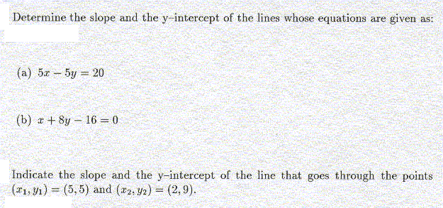
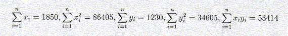
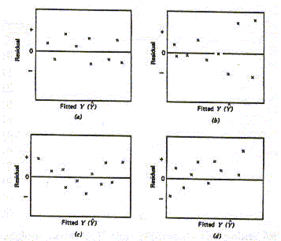

Note that all the material discussed in class (that is not part of the textbook) is relevant for the quiz as well.
- Exercise 4.40, 4.46, 4.47, 4.49 (2 Points each)


Below is a scatterplot of the same data. Our explanatory x-variable in this case is the percentage of urban census tracts and our response y-variable is the average concentration of hazardous air pollutants in each state. We are looking at data of 48 states plus Washington, D.C., i.e, n = 49. (5 Points)

- a) Fit a least squares (linear regression) line to the data.
It might help to know that:

- b) What is a possible interpretation of the slope and y-intercept
you calculated in (a) above? Explain.
- c) Calculate Pearson's correlation coefficient r between x and y.
How can we interpret this value for our given data set?
- d) Based on your calculations in (a), what is the predicted
concentration of air pollutants for a region that has 0%, 40%,
60%, 100% of urban census tracts.
Which of these 4 predictions are more reliable,
which are less reliable? Why?

- Which of these residual plot(s) represent(s) satisfactory pattern(s)
that show that your selected statistical model (e.g., a
least squares regression line) describes the data reasonably well.
- For each of the residual plots that does not represent
a satisfactory pattern, indicate the type of problem that occurs
with the data in that particular case.
- a) To survey the opinions of its customers, an airline company made
a list of all its flights and randomly selected 25 flights. All of the
passengers on those flights were asked to fill out the survey.
- b) A pollster interested in opinion on gun control divided a city into
city blocks, then surveyed the third house to the west of the southeast corner of
each block. If the house was divided into apartments, the westernmost ground floor
apartment was selected. The pollster conducted the survey during the day, but
left a notice for those who were not at home to phone her so she could interview them.
- c) To learn how its employees felt about higher student fees imposed
by the legislature, a university divided employees into three categories:
staff, faculty, and student employees. A random sample was selected from each
group and they were telephoned and asked for their opinion.
- d) A large variety store wants to know if consumers would be willing to
pay slightly higher prices to have computers available throughout the store to
help them locate items. The store posted an interviewer at the door and told her
to collect a sample of 100 opinions by asking the next person who came in the door
each time she had finished an interview.